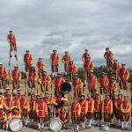
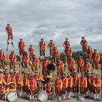

Les Echassiers Royaux de Merchtem conquièrent le monde
Certaines coutumes perdurent dans les loisirs d’une région, créant une forme de folklore qui initie les générations futures à l’histoire d’une façon captivante. La marche sur échasses, initialement une nécessité pratique, est aujourd’hui une activité plaisante. Pas seulement en Europe : en Chine, au Japon, en Polynésie, c’était déjà un élément culturel. En Amérique, on parle même du « sandwichman ». Toutes ces pratiques connaissent une histoire riche et variée.
Pour la tradition des échasses en Brabant, il faut revenir aux temps anciens. C’est dans ce contexte que naît la renommée de l’association folklorique mondiale “Les Echassiers de Merchtem”, connue pour son patrimoine et ses performances de renommée internationale.
À l’origine, les gens utilisaient les échasses pour traverser les rivières ou éviter les inondations. Partout dans le monde, elles ont précédé les outils modernes. À Namur, on raconte les échassiers sur les rives de la Meuse. Dès le XVIIIᵉ siècle, on les retrouve dans les marais des Landes, en France. On les utilisait aussi dans le bâtiment, comme échafaudage, et les cultivateurs de houblon du Kent, en Angleterre, s’en servaient pour attacher leurs plants. Les bergers marchaient parfois sur échasses pour mieux surveiller leur troupeau. En général, les échasses utilitaires ont cédé la place aux outils modernes, mais elles vivent encore dans les jeux pour enfants et les pratiques folkloriques. Le stilt-walker apparaît dans les défilés, le cirque, témoignant de ce désir universel de grandeur – comme le sandwichman américain, les magiciens chez les Bantous, ou les géants dans les cavalcades flamandes…

Les échasses à Merchtem et en Brabant à travers les siècles
En Brabant, l’échasse a une longue histoire. Des archives montrent qu’on en utilisait déjà en 1336. Au début du XVIᵉ siècle, le miniaturiste Simon Bening (né en 1483/1484) a représenté quatre échassiers dans un livre d’heures de Philippe le Beau (1505, conservé à Valence). Pieter Brueghel l’Ancien a peint deux échassiers dans son célèbre “Jeux d’enfants” (1560), exposé aujourd’hui à Vienne. Nos échassiers portent toujours un costume traditionnel, avec les couleurs belges.
La Molenbeek, petit ruisseau sinueux traversant Merchtem, déborde fréquemment, isolant Langevelde. Les habitants utilisaient les échasses pour traverser les zones boueuses, et parfois des planches-glissières sur neige. Ils portaient des blocs — d’où la présence des “bloklopers” chez nous.

 

La fondation des Echassiers de Merchtem
Pendant la Seconde Guerre mondiale, les loisirs étaient limités. On a retrouvé dans d’anciennes traditions un moyen de divertissement. À Langevelde, la jeunesse se mit à marcher sur échasses dès 1942, puis les adultes les ont rejoints. Fabriquées en frêne ou saule, elles atteignaient 1 à 3 mètres, déclenchant des joutes amicales.
Le 10 juin 1945, un cortège de la Libération a traversé Merchtem, avec 25 échassiers de Langevelde, vêtus de tenues élégantes, représentant cinq familles (Van Hoeymissen, Van Den Broek, Cooremans, Walravens, Meysman). Ils ont été accueillis avec grande admiration.
Quelques jours plus tard, la “Folkloristische Vereniging Steltenlopers van Merchtem” a été fondée. Le fondateur et premier président, Jan Vanderhasselt (né le 11/09/1907 – décédé le 01/06/1979 à Ekeren), son épouse Jeannette Van Der Slagmolen (née le 28/11/1911 – décédée le 07/11/1968 à Merchtem), ainsi que Florent, Jules et Victorine Van Hoeymissen, ont structuré l’association.
Après ce succès lors du cortège de la Libération, le groupe a été invité 14 jours plus tard à participer au cortège de la Paix à Wemmel. En février 1946, les échassiers de Merchtem ont participé à la cavalcade de carnaval à Aalst et y ont été primés. Le succès s’est confirmé et les invitations se sont multipliées.